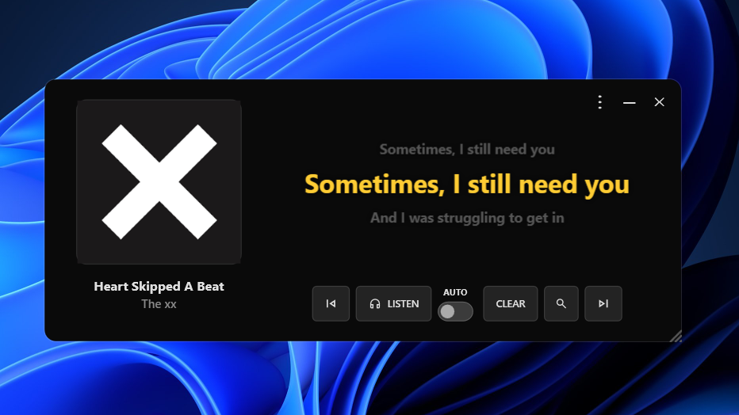
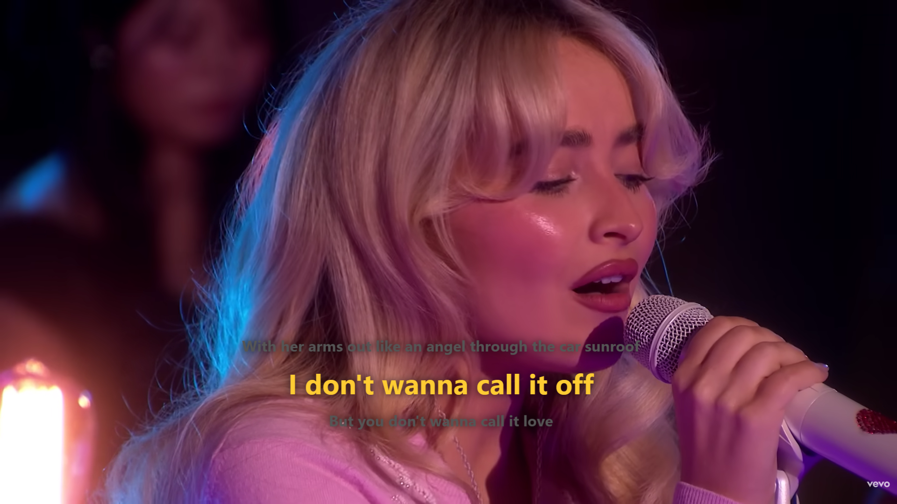
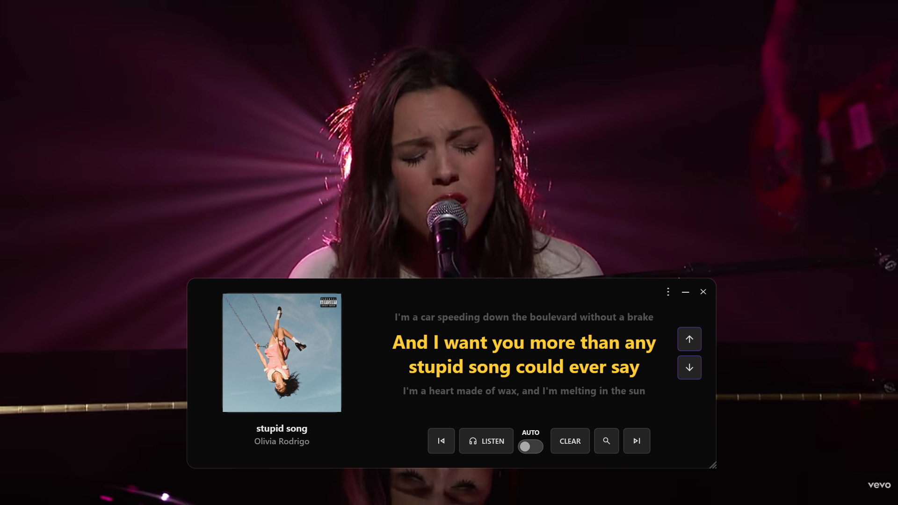
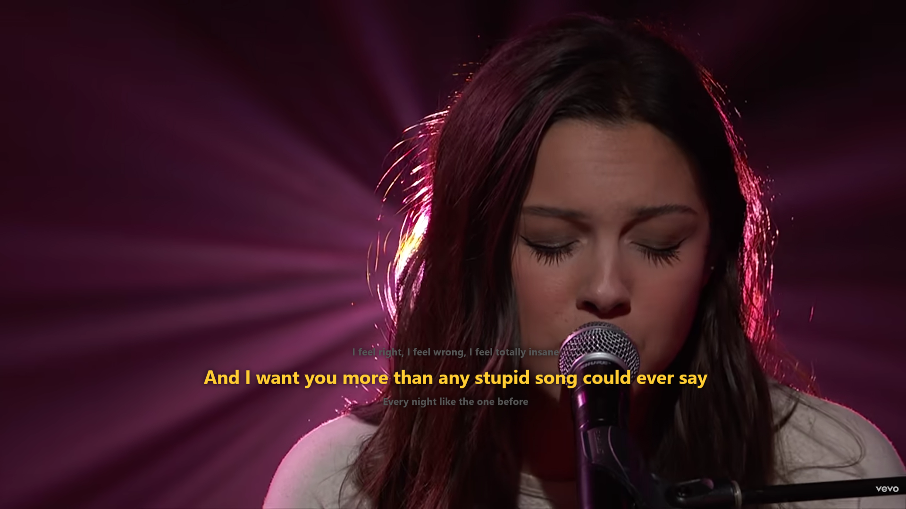
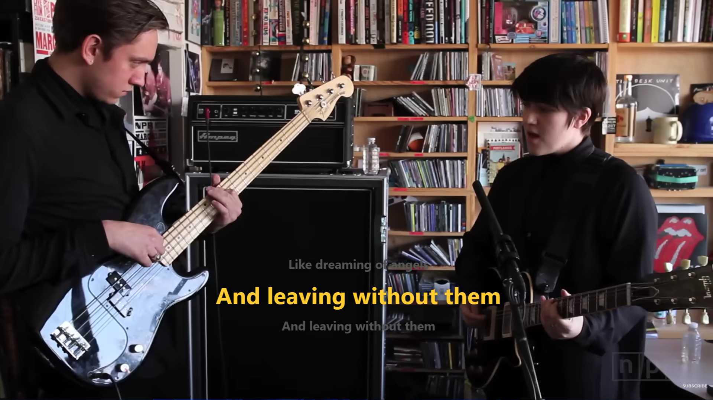
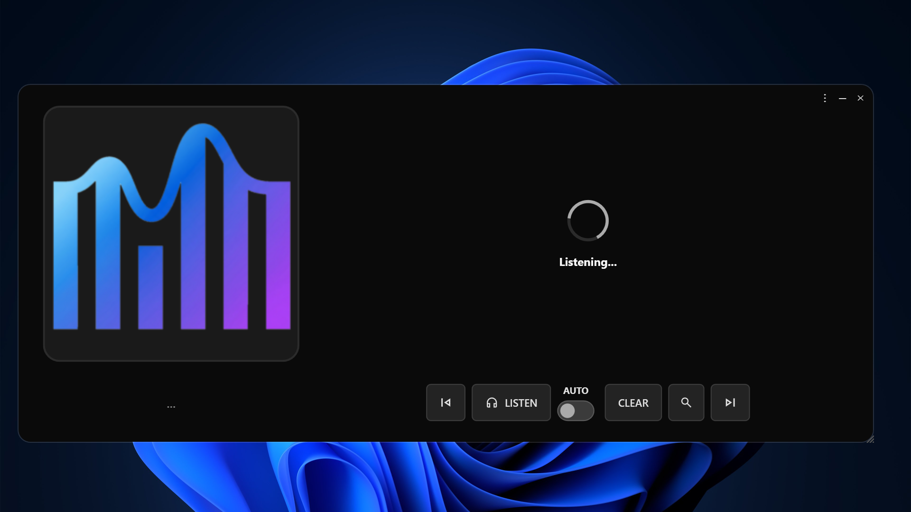
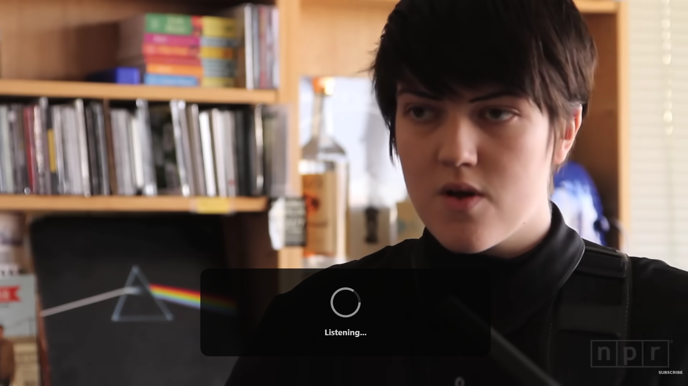
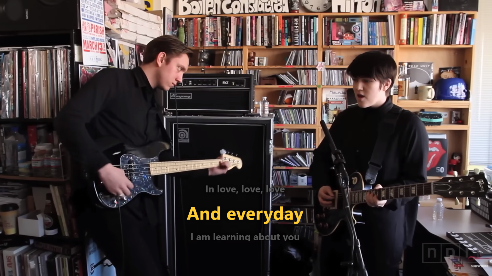
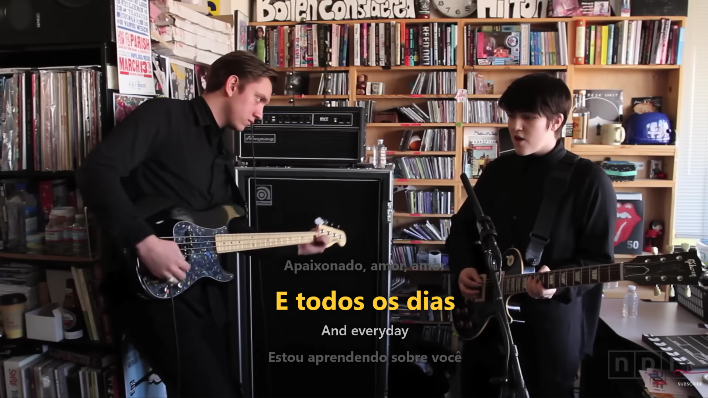

sync_saved_locally
Recognizes the song on its own
FrontLine reads the title, artist and timestamp straight from Windows, so it works with Spotify and several players with zero setup.
A translucent overlay for Windows that listens to Spotify, YouTube, Apple Music or any player and shows lyrics in perfect sync.
play_circle First time here? Check out the full tutorial arrow_forward




No need to paste links or even type the song name. FrontLine figures out what's playing and shows the synced lyrics.

FrontLine reads the title, artist and timestamp straight from Windows, so it works with Spotify and several players with zero setup.

If the app that's playing doesn't report anything to Windows, FrontLine records a short audio clip and identifies the track with Shazam.

Lyrics show up in a transparent, always-on-top window you can drag anywhere. Pause the music and the lyrics pause too.

Switch between Portuguese, English, Spanish, French, or a romanized version of the lyrics.
Install it from the Microsoft Store, open it, and it just works. No account, no login.
Download from the Microsoft Store and open FrontLine. It sits quietly in the taskbar, waiting for you to play something.
Spotify, a browser video, a local file — it doesn't matter where it comes from. What matters is the audio coming out of your PC.
The overlay identifies the track, fetches the synced lyrics, and starts scrolling at the right time — with translation, if you want it.
The app is 100% free and open-source. Donations help keep the lyrics and translation APIs running and fund new features.